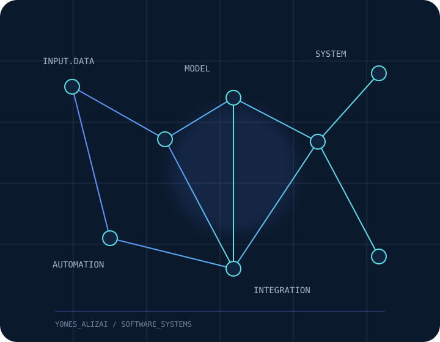
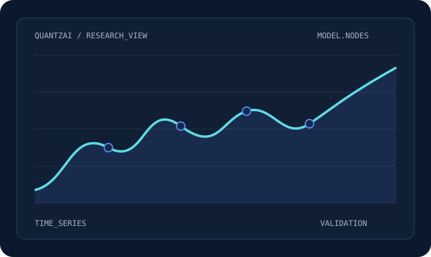
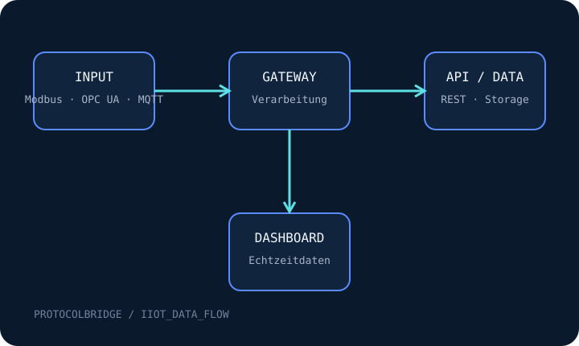
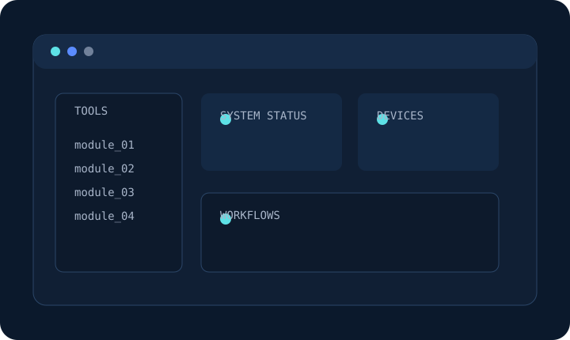

Strukturiert entwickeln
INFORMATIK · SOFTWAREENTWICKLUNG
Yones Alizai
Softwarelösungen für KI, Systemintegration und Automatisierung.
Ich entwickle Softwareprojekte an der Schnittstelle von künstlicher Intelligenz, vernetzten Systemen und praxisnaher Anwendungsentwicklung.

01 / PROFIL
Technologie mit Struktur und praktischem Nutzen
Mein fachlicher Hintergrund verbindet Informatik, technischen IT-Support und die eigenständige Entwicklung von Softwareprojekten. Dabei beschäftige ich mich besonders mit Machine Learning, Systemintegration, Automatisierung und modernen Desktop-Anwendungen.
Systeme verständlich verbinden
Lösungen zuverlässig prüfen
02 / AUSGEWÄHLTE ARBEITEN
Ausgewählte Projekte
Eigene Softwareprojekte mit unterschiedlichen technischen Schwerpunkten.

MACHINE LEARNING · DATENANALYSE · DESKTOP-ANWENDUNG
QuantzAI
Private Forschungs- und Softwareplattform zur datenbasierten Analyse von Forex- und Rohstoffmärkten. QuantzAI verbindet historische Marktdaten, Machine-Learning-Modelle, zeitbasierte Validierung, Risikomanagement, Paper-Trading und eine grafische Desktop-Oberfläche.
Python · LightGBM · scikit-learn · pandas · PySide6 · SQLite
QuantzAI ist ein privates Forschungs- und Entwicklungsprojekt. Die öffentliche Darstellung ist keine Finanzberatung und enthält kein Gewinnversprechen.

IIOT · SYSTEMINTEGRATION · ECHTZEITDATEN
Protocolbridge
IIoT-Middleware zur Verbindung von Modbus, OPC UA und MQTT über eine gemeinsame REST API und ein Echtzeit-Dashboard.
Python · FastAPI · MQTT · Modbus · OPC UA · React · TimescaleDB

DESKTOP-ANWENDUNG · IT-SYSTEMINTEGRATION
IT Integrator App
Private Desktop-Anwendung, die ausgewählte Werkzeuge und wiederkehrende Arbeitsabläufe aus der IT-Systemintegration in einer zentralen Oberfläche zusammenführt.
Electron · React · JavaScript · HTML · CSS
03 / WERKZEUGE
Technische Kompetenzen
Technologien aus den Bereichen Softwareentwicklung, Anwendungen, Daten und vernetzte Systeme.
Softwareentwicklung
- Python
- Java
- JavaScript
- PHP
- SQL
Anwendungen und Benutzeroberflächen
- React
- Electron
- PySide6
- HTML
- CSS
Daten und künstliche Intelligenz
- Machine Learning
- LightGBM
- scikit-learn
- pandas
- PyArrow
Systeme und Schnittstellen
- REST APIs
- MQTT
- Modbus
- OPC UA
- SQLite
- Git und GitHub
04 / HINTERGRUND
Technischer Hintergrund
Mehrjährige Erfahrung im technischen IT-Support ergänzt meinen softwaretechnischen Hintergrund. Dazu gehören die strukturierte Analyse von Hard- und Softwareproblemen, die Einrichtung von Geräten und die verständliche Unterstützung von Anwenderinnen und Anwendern.
05 / ÖFFENTLICH
Artikel und Einblicke
Projektseiten, technische Demonstrationen und weitere Einblicke in öffentliche Plattformen.
06 / AUSTAUSCH
Technische Projekte und fachlicher Austausch
Weitere Informationen zu meinen Projekten und meiner Entwicklungsarbeit finden Sie auf GitHub, LinkedIn und den öffentlichen Projektseiten.